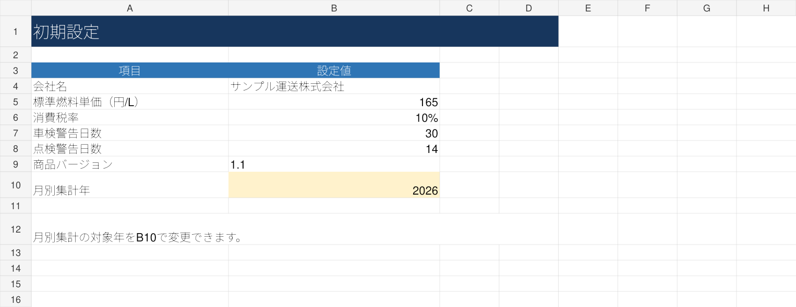

販売中のv1.1から作成した配車・初期設定・ダッシュボードの画面と、既存の経費シート画面です。入力項目や管理内容をご確認いただけます。

※画面内の氏名・車両番号・金額などはサンプルです。実際の業務データではありません。
2,980円・買い切り。Microsoft Excel環境が必要です。請求書作成には対応していません。
運行日や便・案件など、配車に必要な情報を整理できます。
運行に紐づく売上を管理し、あとから確認しやすくまとめます。
燃料代・高速代・外注費などを記録し、ダッシュボードで登録売上・登録経費・運行収支を確認できます。運行収支は会社全体の利益とは異なります。
手書きの配車表では、予定変更の書き直しや運行後の転記、過去の運行情報の確認に手間がかかります。 運送会社の配車表をExcelで管理する際は、運行日・車両・ドライバー・案件情報を整理し、 売上や運賃と合わせて確認できる形を目指すことが重要です。
業務管理PROは、配車・売上・運賃の管理をまとめたい運送会社向けのExcelツールです。 現在の管理項目と商品の機能が合うかを確認してからご検討ください。
販売用Excelの内容を確認したうえで紹介しています。各シートにサンプル入力があり、管理項目を確認できます。
運行日、便名、車両番号、ドライバー、出発地、到着地、予定時刻、売上、運行状況を記録。
車両の車検・点検日、稼働状況やドライバーの免許区分・在籍状況などを整理。
総売上・総経費・運行収支・運行収支率・完了運行件数などを確認。月別の売上・経費・運行収支は棒グラフでも確認できます。
このほか、初期設定・経費管理・運行日報・事故／トラブル記録のシートも収録しています。
ご購入前の注意：請求書の発行、紙の配車表からの自動取り込みには対応していません。Excelで入力・管理するテンプレートです。
最初の運行から、車両・ドライバー・運行内容・売上を記録したい方へ。v1.1の「はじめに」には、業務用コピーの作成、サンプルの消し方、台帳から入力する順番を記載しています。
使い始めの入力例を見る配車表、日報、売上、経費の項目を整理したい方へ。現在使っている管理表と、公開している実画面の入力項目を比較してください。既存ファイルの自動取り込み・自動統合はありません。
自社の項目と実画面を比べる導入前にご確認ください：Microsoft Excelで手入力・管理するテンプレートです。外部システムとの自動連携、請求書発行、紙帳票の自動読み取り、複数人のリアルタイム共同配車を目的とする場合には向いていません。法令帳票への完全対応や開業要件を満たすことを保証する商品ではありません。
販売中のv1.1に入っているサンプルを例に、入力する場所を紹介します。表示額は商品サンプルであり、導入成果ではありません。
「ドライバー」「車両管理」に氏名・車両番号などを登録。「初期設定」B10で月別集計年を指定します。
例：便名A-001、車両番号1001、川口→横浜、出発08:00、到着予定10:00、売上（税抜）65,000円。運行状況も記録します。
支出は「経費管理」、時刻・走行距離・給油量などは「日報」へ入力。金額集計は配車の売上と経費管理の経費を参照し、日報は重複加算しません。
集計の範囲：上段KPIは全登録期間、月別集計は指定年、今月の登録売上はパソコンの現在日付が基準です。売上集計には登録済みの予定・中止も含まれます。未入力の人件費・固定費・税金等は反映されず、会社全体の利益や確定実績とは異なります。
入力前に元ファイルを保管して業務用コピーを作成し、サンプルは入力値だけを消してください。数式や行を削除せず、定期的にバックアップを保管してください。
購入前に管理項目が自社の運用に合うかご確認ください。
2,980円で購入する清掃・修理・制作・業務代行などの案件に。経費・手数料・移動時間を含めた実質時給と、自分の目標時給に必要な見積額を確認します。
1件の確認＋案件一覧100件。1,480円・買い切り。税計算・請求書発行には対応しません。
実画面・対応範囲を見る入力項目の追加、集計表の調整などをご相談いただけます。対応可否・作業範囲・料金・納期は内容確認後に個別見積。見積への合意前に有料作業は始めません。
相談時は業種、困っている作業、希望する変更、ご利用のExcel環境をお知らせください。顧客名・個人情報・機密情報を含むファイルは送らず、伏せた画面や項目一覧でご相談ください。
メールで相談するテンプレートの商品代金に個別作業は含まれません。すべての変更への対応を保証するものではありません。
はい。日報には開始・終了時刻、走行距離、給油量、運行件数などの入力項目があります。車両管理には車両番号、登録番号、車検満了日、次回点検日などを記録できます。法令帳票や労務判定への完全対応を保証するものではありません。
配車・車両・ドライバー・売上・経費・運行日報・事故記録をExcelで整理し、ダッシュボードで主な数値を確認できます。
現在の管理項目と本商品の入力項目が合うか確認してください。紙の情報を自動で取り込む機能は案内していません。
いいえ。現在の商品は請求書作成には対応していません。
Microsoft Excel向けのテンプレートです。Googleスプレッドシートや他の表計算ソフトでの動作は保証していません。
はい。ページ内の「実際のExcel画面を公開」から、配車・経費・ダッシュボードのサンプル画像を拡大して確認できます。
無料版は提供していません。2,980円の買い切り商品です。購入前に、このページで公開している実際のExcel画面と管理項目をご確認ください。
はい。v1.1には月別の売上・経費・運行収支の棒グラフがあります。「初期設定」B10で集計する年を指定します。このページのグラフ画像は静止画で、カーソルを合わせても金額は表示されません。
いいえ。2,980円の買い切り型です。
本商品はMicrosoft Excelで使用する業務管理テンプレートです。会社ごとの業務内容によっては、項目の追加・変更が必要になる場合があります。
Excelのバージョンや利用環境によって、表示や動作が異なる場合があります。使用・編集前には、必ず元ファイルと入力データのバックアップを取ってください。
本テンプレートの使用によって発生した損害について、販売者は法令上認められる範囲で責任を負いません。ただし、販売者の故意・重大な過失による場合など、法令上免責できない場合を除きます。